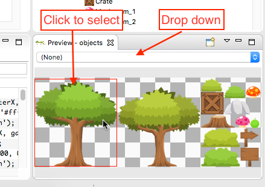

The Preview Window¶
As the name suggest, in this window you can visualize different objects, specially the asset declarations of the asset pack and media files (images, sounds, videos).
This Preview window usually show details of the previewed object like dimension, name, etc… In addition in the case of textures you can drag the frames drop them into a scene, to create new obejcts.
To preview an asset you can drag it from the Assets explorer or Project Explorer and drop it into the Preview window, or select an asset and press CTRL+ALT+V.
In the JavaScript editor, if you put the cursor on a string literal and press CTRL+ALT+V, the asset of the same name will be opened in the Preview.

Note in the menu of the Preview there are the following options:

| Open New Window | Opens a new Preview, so you can visualize many objects at the same time. |
Refresh (F5) |
To update the content. This is useful when the object was changed by an external tool. |
| Clear | Empty the window. |
The sprite-sheet preview¶
When you open a sprite-sheet asset in the Preview window it shows a special control where you can play the whole sprite-sheet as a single animation. It is useful for quick animations preview and can ve used when the game is not based on visual scenes, that have their own animations editor.
The textures atlas preview¶
The preview of a textures atlas asset shows the image of the complete texture and drop-down with a list of the sprite (frame) names. To focus on a particular sprite of the map you can click it or select it in the drop-down. In addition you can drag a frame and drop it in the same (or other) Preview window to preview only that frame.
